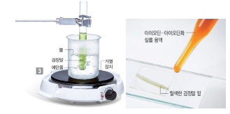

IV. 식물과 에너지
2. 식물의 흐름과 에너지
01. 양분을 만드는 광합성
- 세포에서 양분을 분해하여 생명활동에 필요하 에너지를 얻는 과정을 이라고 한다.
- 식물은 밤에 산소를 , 이산화탄소를 한다.
- 겨울에 잎이 다 떨어진 나무에서는 낮과 밤에 기체 교환이 각각 어떻게 일어날지 설명해 보자.
... ...............................
1. 호흡 2. 흡수, 방출
3. 광합성은 대부분 잎에서 일어나무로 겨울에 잎이 다 떨어지고 가지만 남은 나무에서는 광합성이 거의 일어나지 않는다. 하지만 생명 활동을 위해 호흡은 일어나므로, 낮과 밤에 모두 산소를 흡수하고 이산화 탄소를 방출한다.
02. 광합성으로 만든 양분의 사용
- 식물은 광합성으로 만들어진 양분을 생명 활동에 필요한 를 얻거나 하는데 사용하며, 남은 양분을 뿌리,줄기,열매 등에 저장한다.
- 농부들은 가을에 크고 맛있는 사과를 수확하기 위해 어린 사과 중 일부를 솎아내기도 한다. 그 까닭을 양분의 사용과 관련하여 설명해 보자.
1. 에너지, 생장
2. 사과나무는 열매에 저장하는데, 봄에 열린 어린 사과를 그대로 두면 각 사과에 운반되는 양분의 양이 적어지므로 사과 열매가 크게 자랄 수 없기 때문이다.
식물과 에너지 총정리
tips_and_updates 그림은 식물의 잎 뒷면에 있는 표피를 벗겨 현미경으로 관찰한 결과를 나타낸 것이다.
< 보 기 >
ㄱ. A는 표피 세포, B는 공변세포이다.
ㄴ. A는 엽록체가 있고 B는 엽록체가 없다.
ㄷ. A의 모양에 따라 기공은 열리거나 닫힌다.
ㄹ. A와 B는 안쪽 세포벽과 바깥쪽 세포벽의 두께에 차이가 없다.
① ㄱ, ㄴ
② ㄴ, ㄷ
③ ㄷ, ㄹ
④ ㄱ, ㄴ, ㄷ
⑤ ㄴ, ㄷ, ㄹ
... ...............................
정답 : 2
해설 : 공변세포 두 개가 기공을 둘러싸고 있으며, 기공은 공변세포의 모양에 따라 열리거나 닫힌다. 공변세포는 표피세포와 달리 엽록체가 있다. 또한 공변세포는 안쪽 세포벽이 바깥쪽 세포벽보다 두껍다.
출처 : 2021년 1학기 기말고사
tips_and_updates 식물의 호흡 과정을 식으로 나타낸 것이다.
포도당 + ( ㉠ ) → ( ㉡ ) + 물 + 에너지
이에 대한 설명으로 옳지 않은 것은?
① ㉠은 산소이다.
② ㉡은 이산화 탄소이다.
③ ㉠은 잎의 기공을 통해서만 흡수된다.
④ ㉡은 광합성에 사용되기도 한다.
⑤ 에너지는 식물이 꽃을 피우거나 잎을 틔우는 데 사용된다.
... ...............................
정답 : 3
해설 : 호흡은 세포에서 양분이 산소와 반응하여 이산화 탄소와 물로 분해하여 에너지를 얻는 과정으로 식물체를 구성하는 모든 살아있는 세포에서 일어난다. 특히, 식물은 호흡으로 꽃을 피우거나 잎을 틔우는 데 필요한 에너지를 얻는다.
출처 : 2021년 1학기 기말고사
tips_and_updates 그림은 식물에서 낮에 일어나는 기체 교환을 나타낸 것이다.
이에 대한 설명으로 옳은 것은?
① (가)의 양이 (나)의 양보다 많다.
② A는 산소, B는 이산화 탄소이다.
③ 식물이 낮에는 C를 방출하고 D를 흡수하는 것처럼 보인다.
④ (가)에서 흡수하는 산소의 양은 (나)에서 방출하는 산소의 양보다 많다.
⑤ (나)에서 방출하는 이산화 탄소의 양은 (가)에서 흡수하는 이산화 탄소의 양보다 많다.
... ...............................
정답 : 1
해설 : 식물의 기체 교환은 낮에 광합성량이 호흡량보다 많아 식물은 이산화 탄소를 흡수하고, 산소를 방출한다. 밤에는 호흡만 일어나므로 식물은 산소를 흡수하고, 이산화 탄소를 방출한다.
출처 : 2021년 1학기 기말고사
tips_and_updates 식물의 광합성과 호흡의 특징을 비교한 것으로 옳은 것은?
| 구분 | 광합성 | 호흡 | ||
| ① | 장소 | 모든 세포 | 잎 | |
| ② | 양분 | 분해 | 생성 | |
| ③ | 에너지 | 저장 | 방출 | |
| ④ | 기체 출입 | 산소 흡수, 이산화 탄소 방출 | 산소 방출, 이산화 탄소 흡수 |
|
| ⑤ | 하루 중 일어나는 시기 | 낮 (빛이 있을 때) | 밤 (빛이 없을 때) |
... ...............................
정답 : 3
해설 : 광합성은 빛이 있는 낮에 엽록체에서 일어나며 양분을 만들어 에너지를 저장하는 과정으로 이산화 탄소를 흡수하고 산소를 방출한다. 호흡은 밤과 낮 상관없이 모든 세포에서 양분을 분해하여 에너지를 방출하는 과정으로 산소를 흡수하고, 이산화 탄소를 방출한다.
출처 : 2021년 1학기 기말고사
tips_and_updates 식물의 광합성과 호흡을 여러 내용으로 구분하여 비교하였다. 옳지 않은 것은?
| 구분 | 광합성 | 호흡 | ||
| ① | 양분 | 합성 | 분해 | |
| ② | 에너지 | 저장 | 방출 | |
| ③ | 시간 | 낮 | 밤 | |
| ④ | 사용기체 | 이산화 탄소 | 산소 | |
| ⑤ | 발생기체 | 산소 | 이산화 탄소 |
... ...............................
정답 : 3
해설 : 식물의 광합성은 주로 낮에 호흡은 밤낮으로 이루어진다.
출처 : 2019년 1학기 기말고사
tips_and_updates 식물의 광합성으로 만들어진 양분에 대한 설명으로 옳지 않은 것은?
① 양분은 모두 뿌리, 줄기, 열매 등에 저장된다.
② 식물체를 구성하는 성분이 되어 생장하는데 사용된다.
③ 호흡으로 생명 활동에 필요한 에너지를 얻는데 사용된다.
④ 지구에 살고 있는 다양한 생물에게 에너지원으로 제공된다.
⑤ 광합성 결과 최초로 만들어진 포도당은 녹말로 바뀌어 잎에 잠시 저장된다.
... ...............................
정답 : 1
해설 : 양분은 에너지를 얻거나 생장하는 데 사용하고 남은 양분은 뿌리, 줄기, 열매, 씨 등에 다양한 물질로 바꾸어 저장한다.
출처 : 2021년 1학기 기말고사
tips_and_updates 식물의 광합성으로 만들어진 양분에 대한 설명으로 옳지 않은 것은?
① 밤에 포도당으로 바뀌어 체관을 따라 운반된다.
② 식물의 생명 활동에 필요한 에너지를 얻는 데 사용된다.
③ 식물의 종류에 따라 다양한 물질로 바뀌어 체내에 저장된다.
④ 식물체를 구성하는 성분이 되어 식물이 생장하는 데 사용된다.
⑤ 다양한 생물에게 생명 활동에 필요한 에너지원으로 제공된다.
... ...............................
정답 : 1
해설 : 밤에 설탕으로 바뀌어 체관을 따라 운반된다.
출처 : 2019년 1학기 기말고사
tips_and_updates 광합성 결과로 생성된 양분은 여러 물질로 바뀌어 저장된다. 이 물질로 적당하지 않은 것을 모두 고른 것은?
< 보 기 >
㉠ 칼슘
㉡ 설탕
㉢ 포도당
㉣ 단백질
① ㉠
② ㉡
③ ㉠, ㉢
④ ㉡, ㉢
⑤ ㉡, ㉢, ㉣
... ...............................
정답 : 1
해설 : 설탕, 포도당, 녹말, 단백질 등으로 저장
출처 : 2019년 1학기 기말고사
tips_and_updates 아래 그림처럼 시금치 잎 조각을 1% 탄산수소 나트륨 수용액에 넣은 후 LED 전등의 개수를 달리하여 시금치 조각이 떠오르는 시간을 측정하는 실험을 하였다. 다음의 물음에 답하여라.
(1) 위 실험에 대한 설명으로 옳은 것은?
① 빛의 세기와 식물의 호흡의 관계를 알 수 있다.
② 비커와 전등 사이의 거리는 모두 같아야 한다.
③ 전등이 켜진 개수는 온도를 조절하기 위한 것이다.
④ 생성된 양분으로 시금치 잎 조각이 가벼워져 떠오른다.
⑤ 전등이 켜진 개수가 많을수록 잎 조각이 떠오르는 데 걸린 시간이 길어진다.
(2) 위 실험에서 1% 탄산수소 나트륨 수용액을 사용하는 이유는?
① 산소를 공급하려고
② BTB용액 대신 사용하려고
③ 이산화 탄소를 공급하려고
④ 시금치 잎에서 공기를 빼려고
⑤ 시금치 잎 조각의 무게를 가볍게 하려고
정답 : (1) 2
해설 : 비커와 전등 사이의 거리는 모두 같아야 한다.
정답 : (2) 3
해설 : 1% 탄산수소 나트륨 수용액은 이산화 탄소를 공급함
출처 : 2019년 1학기 기말고사
tips_and_updates 현미경으로 관찰한 식물 잎의 표피 일부를 나타낸 것이다. 이에 대한 설명으로 옳지 않은 것은?
① A의 모양에 따라 기공이 열리거나 닫힌다.
② B는 안쪽 세포벽과 바깥쪽 세포벽의 두께에 차이가 없다.
③ C는 식물의 생명활동과 관련된 기체가 드나드는 통로이다.
④ 그림 (가)의 공변세포의 내부 농도가 높아지면 그림 (나)의 형태가 된다.
⑤ 그림 (가)의 시기에는 식물의 광합성, 호흡작용이 활발하고 (나)의 시기에는 주로 호흡작용이 발생한다.
... ...............................
정답 : 4
해설 : 그림 (나)의 공변세포의 내부 농도가 높아지면 그림 (가)의 형태가 된다.
출처 : 2019년 1학기 기말고사
tips_and_updates 그림과 같이 검정말을 에탄올로 탈색한 다음, 잎을 떼어 아이오딘-아이오딘화 칼륨 용액을 1방울 떨어뜨렸다. 현미경으로 관찰하였을 때 청람색으로 색변화가 일어난 부분과 검출된 영양소는?

| 색깔 변화 부분 | 검출된 영양소 | ||
| ① | 핵 | 녹말 | |
| ② | 핵 | 포도당 | |
| ③ | 엽록체 | 녹말 | |
| ④ | 엽록체 | 포도당 | |
| ⑤ | <표피세포 | 단백질 |
... ...............................
정답 : 3
해설 : 아이오딘-아이오딘화 칼륨 용액을 1방울 떨어뜨려 엽록체에서 녹말이 생성됨을 확인할 수 있다.
출처 : 2019년 1학기 기말고사
tips_and_updates 식물 공장은 도심의 건물 안에서 발광 다이오드조명과 양분이 들어 있는 배양액을 이용하여 채소 등을 기르는 곳이다. 이때 고려해야 하는 환경 요인을 모두 고른 것은?
< 보 기 >
㉠ 온도
㉡ 빛의 세기
㉢ 산소의 양
㉣ 이산화탄소의 양
① ㉠
② ㉡
③ ㉠, ㉡
④ ㉡, ㉢
⑤ ㉠, ㉡, ㉣
... ...............................
정답 : 5
해설 : 온도, 빛의 세기, 이산화탄소의 양
출처 : 2019년 1학기 기말고사
tips_and_updates 식물체의 기체교환에 대한 설명으로 옳은 것은?
① 밤과 낮에 일어나는 기체교환에 차이가 없다.
② 밤에는 광합성에 의한 기체 교환이 일어난다.
③ 식물의 기체교환은 식물체의 잎에서만 일어난다.
④ 식물체를 구성하는 모든 살아있는 세포에서 호흡이 일어난다.
⑤ 포도당이 이산화탄소와 반응하여 꽃을 피우거나 잎을 틔우는 데 필요한 에너지를 방출한다.
... ...............................
정답 : 4
해설 : 식물체를 구성하는 모든 살아있는 세포에서 호흡이 일어난다
출처 : 2019년 1학기 기말고사